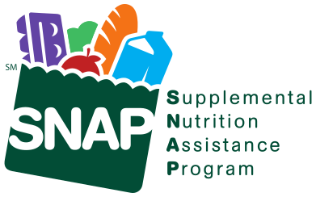

All produce and fruit being sold at our market is grown by the farmers. Any other products available are made by the vendor and we encourage the use of seasonal, local produce and fruit.
We are proud to have been a part of the Florence community for over 28 years. The market is a Member of the Florence Civic and Business Association and is supported by a grant from Farm Credit East.
Payment Options



We are pleased to accept your SNAP/EBT, credit cards, and senior coupons at the Florence Farmer’s Market. Please visit Intervale Farm’s stand to swipe your card and receive tokens that may be used at any vendor stand.
HIP (Healthy Incentives Program) is also available at certain vendors. Find out if you qualify for the Supplemental Nutrition Assistance Program (a.k.a food stamps) and apply at www.gettingsnap.org.
HIP (Healthy Incentives Program) is also available at certain vendors. Find out if you qualify for the Supplemental Nutrition Assistance Program (a.k.a food stamps) and apply at www.gettingsnap.org.
In Local Media
Here is some press coverage by local outlets about the market over the years:
WRSI, May 2022 (audio courtesy of CISA):
Paradise City Press, August 2013:
WGBY, June 10, 2015: